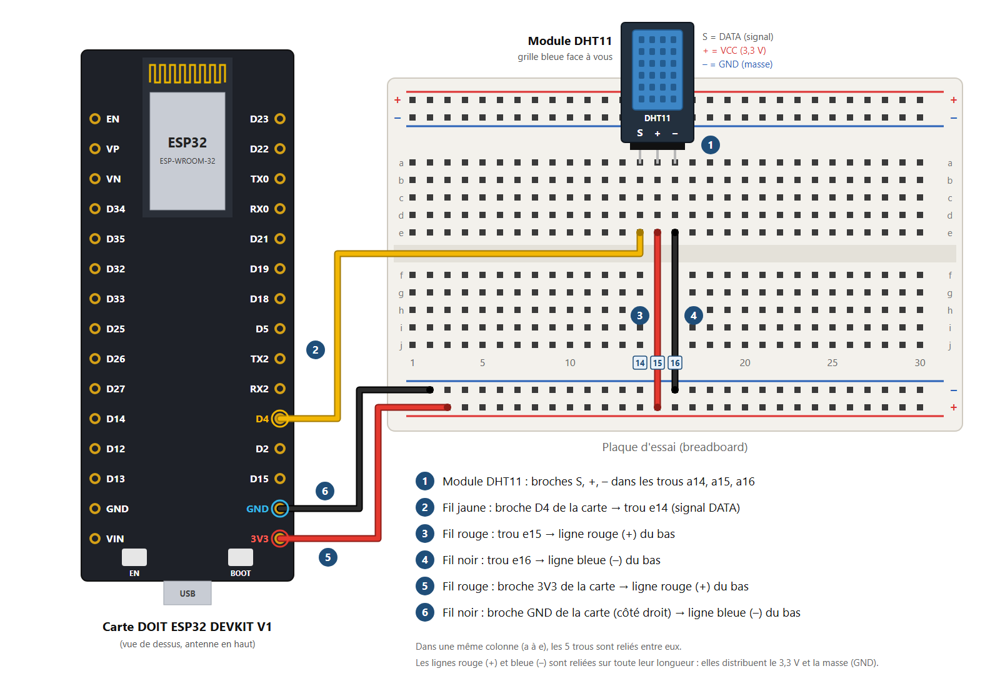
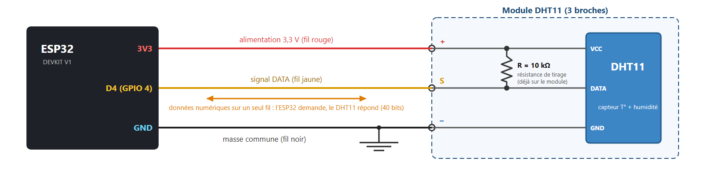

Travaux pratiques — IoT · 05
Vous écrivez votre programme de mesure dans l'Arduino IDE, puis créez le serveur web avec le générateur : jauges, courbes des 30 dernières minutes et historique téléchargeable en CSV.
Ce qui vous est fourni
Votre travail : le câblage, votre programme de mesure, la création du serveur web avec le générateur, les tests et les questions.
Matériel | Remarque |
|---|---|
1 carte DOIT ESP32 DEVKIT V1 + câble micro-USB | Le câble doit permettre le transfert de données (pas seulement la charge) |
1 module DHT11 à 3 broches (S, +, –) | La résistance de tirage de 10 kΩ est déjà soudée sur le module. L'ordre des broches peut changer d'un fabricant à l'autre : lisez les marquages |
1 plaque d'essai (breadboard) | |
3 fils mâle-femelle (1 jaune, 1 rouge, 1 noir) + 2 fils mâle-mâle (1 rouge, 1 noir) | Côté femelle : sur les broches de la carte ; côté mâle : dans la plaque d'essai |
1 ordinateur avec l'Arduino IDE | Les cartes ESP32 sont déjà installées ; la bibliothèque du capteur est installée à la partie 6 |
1 smartphone (ou l'ordinateur) avec un navigateur web | Connecté au même réseau Wi-Fi que la carte |
Un tableur (Excel ou LibreOffice Calc) | Pour ouvrir le fichier CSV des mesures |
Le DHT11 est un capteur bon marché qui mesure la température et l'humidité relative de l'air. Il contient un petit microcontrôleur qui envoie les mesures sous forme numérique sur un seul fil (DATA). Extrait de la fiche technique :
Caractéristique | Valeur |
|---|---|
Tension d'alimentation | 3,3 V à 5,5 V (ici : 3,3 V) |
Température : plage / précision | 0 à 50 °C / ± 2 °C |
Humidité relative : plage / précision | 20 à 90 % / ± 5 % |
Résolution | 1 °C et 1 % |
Temps entre deux mesures | 1 s minimum (2 s conseillées) |
Sortie | Numérique, un seul fil (trame de 40 bits) |
L'humidité relative, c'est quoi ?
C'est la quantité de vapeur d'eau contenue dans l'air, comparée à la quantité maximale que l'air peut contenir à cette température. 100 % = air saturé (brouillard, buée) ; une salle de classe est souvent entre 40 et 60 %.
Ouvrez Animation_DHT11_Serveur_Web.html et jouez les scénarios dans l'ordre. Cochez « Pas à pas » pour avancer à votre rythme.
Rappels


Élément | De | Vers |
|---|---|---|
Module DHT11 | Broches S, +, – (grille bleue face à vous) | Trous a14, a15, a16 |
Fil jaune (mâle-femelle) | Broche D4 de la carte | Trou e14 (colonne de S) |
Fil rouge (mâle-mâle) | Trou e15 (colonne de +) | Ligne rouge (+) du bas |
Fil noir (mâle-mâle) | Trou e16 (colonne de –) | Ligne bleue (–) du bas |
Fil rouge (mâle-femelle) | Broche 3V3 de la carte | Ligne rouge (+) du bas |
Fil noir (mâle-femelle) | Broche GND de la carte (côté droit) | Ligne bleue (–) du bas |
Dans le programme, la broche D4 correspond au numéro 4 (const int DHT_PIN = 4;).
Attention
Faites vérifier votre câblage par l'enseignant avant de brancher la carte.
Avant de créer le serveur web, vérifiez votre câblage et le capteur avec un programme que vous écrivez vous-même : il affiche la température et l'humidité dans le moniteur série.
Mesure_DHT11 (Fichier > Nouveau croquis). Choisissez la carte (Outils > Carte > esp32 > DOIT ESP32 DEVKIT V1) et le port (Outils > Port).#include <DHT.h> en haut du programme donne accès au capteur ; DHT dht(4, DHT11); déclare un DHT11 sur la broche D4 ; dans setup(), Serial.begin(115200) et dht.begin() démarrent le moniteur série et le capteur ; dans loop(), dht.readTemperature() et dht.readHumidity() renvoient les mesures, Serial.print() les affiche et delay(2000) attend 2 s.nan (« pas un nombre ») : testez-le avec isnan(t) et affichez alors « Erreur de lecture du DHT11 ! ».Moniteur série à 115200 bauds. Si le téléversement bloque sur « Connecting… », maintenez le bouton BOOT enfoncé jusqu'au début du transfert.Notez sur votre feuille la température (°C) et l'humidité (%) affichées dans le moniteur série.
Le programme du serveur web, vous le créez sans le programmer, avec le générateur de tableau de bord : vous choisissez ce que la page affiche, le générateur écrit le programme.
Generateur_Page_Web_ESP32_etudiant.html, ou celdobigeon.github.io/IoT) et choisissez « Page vide ».Station_meteo..ino dans l'Arduino IDE et téléversez-le. Si le téléchargement ne démarre pas, utilisez « Copier le programme » et collez-le dans un nouveau croquis.Moniteur série (115200 bauds), puis appuyez sur le bouton EN de la carte : l'adresse IP s'affiche après la connexion, puis une mesure toutes les 5 secondes.Notez sur votre feuille l'adresse IP de votre carte (par exemple 192.168.1.42) : vous en aurez besoin pour ouvrir la page.
Notez sur votre feuille l'humidité maximale atteinte après avoir soufflé (%) et le délai avant que la page change (s).
Le fichier CSV
CSV (Comma-Separated Values) : un fichier texte où chaque ligne est une mesure et où les valeurs sont séparées par un caractère. Ici, le séparateur est le point-virgule et les nombres ont une virgule décimale, comme l'attend un tableur réglé en français.
Exemple : temps (s);temperature (°C);humidite (%) puis 0;23,0;47,0 puis 5;23,0;48,0
Notez sur votre feuille le nombre de mesures, puis la température moyenne, minimale et maximale (°C).
Ces trois améliorations se font sur le programme d'origine (dossier ESP32_Serveur_Web_DHT11, voir l'annexe) : ouvrez-le dans l'Arduino IDE, renseignez le Wi-Fi, puis modifiez-le.
if (temperature > 28) {
html += "<p style='color:#c00'><b>Alerte : température trop élevée !</b></p>";
}void handleMesures() {
String json = "{\"temperature\":" + String(temperature, 1) + ",\"humidite\":" + String(humidite, 0) + "}";
server.send(200, "application/json", json);
}Problème | Solution |
|---|---|
La carte n'apparaît pas dans Outils > Port | Vérifier le câble micro-USB (données), installer le pilote USB (CP210x), changer de port USB. |
Erreur de compilation « DHT.h: No such file or directory » | La bibliothèque DHT sensor library n'est pas installée : refaire l'étape 2 de la partie 6. |
Le téléversement bloque sur « Connecting… » | Maintenir le bouton BOOT enfoncé au début du téléversement. |
Des points s'affichent sans fin dans le moniteur série | La carte ne trouve pas le réseau Wi-Fi : prévenir l'enseignant. |
Rien ne s'affiche dans le moniteur série | Régler la vitesse sur 115200 bauds, puis appuyer sur EN. |
« Erreur de lecture du DHT11 ! » | Vérifier les colonnes 14-15-16, le fil jaune sur D4, le fil 3V3, le fil GND et l'ordre des broches du module. |
La page ne s'ouvre pas | Vérifier que le téléphone est sur le même Wi-Fi et que l'adresse commence par http:// (et non https://). |
Le fichier CSV s'ouvre dans une seule colonne | Tableur réglé en anglais : utiliser Données > Convertir (Excel) ou choisir le point-virgule comme séparateur à l'ouverture (LibreOffice). |
Les courbes repartent de zéro | La carte a redémarré (coupure d'alimentation, bouton EN) : l'historique était dans sa mémoire et il est effacé. |
La page ne se recharge plus | Le navigateur a affiché une page d'erreur (Wi-Fi coupé, carte redémarrée…) : recharger la page à la main. |
Le capteur est chaud | Le + et le – sont inversés : débrancher immédiatement et vérifier le câblage. |
Ce programme sert à la partie 10, « Pour aller plus loin ». Il ressemble à celui que crée le générateur : vous y retrouvez les mêmes lignes que dans l'animation.
// TP IoT - Afficher la température et l'humidité sur une page web hébergée par l'ESP32
// Carte : DOIT ESP32 DEVKIT V1 - module DHT11 : S sur D4 (GPIO 4), + sur 3V3, - sur GND
// Bibliothèque à installer : « DHT sensor library » (Adafruit)
#include <WiFi.h>
#include <WebServer.h>
#include <DHT.h>
const char* ssid = "NOM_DU_RESEAU"; // nom du réseau Wi-Fi (2,4 GHz)
const char* password = "MOT_DE_PASSE"; // mot de passe du réseau Wi-Fi
const int DHT_PIN = 4; // broche DATA = D4
DHT dht(DHT_PIN, DHT11); // capteur de type DHT11
WebServer server(80); // serveur web sur le port 80
float temperature = 0; // dernière mesure valide (°C)
float humidite = 0; // dernière mesure valide (%)
bool erreur_capteur = true; // vrai tant qu'aucune mesure valide n'a été faite
unsigned long derniereMesure = 0; // instant de la dernière mesure (ms)
const unsigned long PERIODE = 5000; // une mesure toutes les 5 s
// Historique des mesures, gardé dans la mémoire de la carte (effacé si la carte redémarre)
const int NB_MAX = 360; // 360 mesures x 5 s = 30 minutes
float histT[NB_MAX]; // températures (°C)
float histH[NB_MAX]; // humidités (%)
unsigned long histTemps[NB_MAX]; // instant de chaque mesure (s depuis le démarrage)
int nbMesures = 0; // nombre de mesures enregistrées
// Ajoute une mesure à l'historique
void enregistrer(float t, float h) {
if (nbMesures == NB_MAX) { // historique plein : on oublie la mesure la plus ancienne
for (int i = 1; i < NB_MAX; i++) {
histT[i - 1] = histT[i];
histH[i - 1] = histH[i];
histTemps[i - 1] = histTemps[i];
}
nbMesures--;
}
histT[nbMesures] = t;
histH[nbMesures] = h;
histTemps[nbMesures] = millis() / 1000;
nbMesures++;
}
// Demande une mesure au capteur et la garde en mémoire
void mesurer() {
float t = dht.readTemperature(); // température en °C
float h = dht.readHumidity(); // humidité relative en %
if (isnan(t) || isnan(h)) { // isnan() : la mesure a échoué
erreur_capteur = true;
Serial.println("Erreur de lecture du DHT11 !");
} else {
erreur_capteur = false;
temperature = t;
humidite = h;
enregistrer(t, h);
Serial.print("Temperature : ");
Serial.print(t);
Serial.print(" C Humidite : ");
Serial.print(h);
Serial.println(" %");
}
}
// Dessine une jauge en demi-cercle (image SVG) : l'arc coloré va de mini à la valeur
String jauge(String titre, float valeur, float mini, float maxi, int decimales, String unite, String couleur) {
float k = constrain((valeur - mini) / (maxi - mini), 0.001, 1); // fraction de 0 à 1
float angle = PI * (1 - k); // 180° pour mini, 0° pour maxi
float x = 100 + 80 * cos(angle); // bout de l'arc coloré
float y = 100 - 80 * sin(angle);
String s = "<svg width='200' height='140' viewBox='0 0 200 140'>";
s += "<path d='M20,100 A80,80 0 0 1 180,100' fill='none' stroke='#ddd' stroke-width='16'/>";
s += "<path d='M20,100 A80,80 0 0 1 " + String(x, 1) + "," + String(y, 1) + "' fill='none' stroke='" + couleur + "' stroke-width='16'/>";
s += "<text x='100' y='92' text-anchor='middle' font-size='26' font-weight='bold'>" + String(valeur, decimales) + " " + unite + "</text>";
s += "<text x='20' y='120' text-anchor='middle' font-size='12'>" + String(mini, 0) + "</text>";
s += "<text x='180' y='120' text-anchor='middle' font-size='12'>" + String(maxi, 0) + "</text>";
s += "<text x='100' y='135' text-anchor='middle' font-size='14'>" + titre + "</text>";
s += "</svg>";
return s;
}
// Dessine les courbes de l'historique (image SVG) : température de 0 à 50 °C, humidité de 0 à 100 %
String courbe() {
String s = "<svg width='100%' viewBox='0 0 680 260' style='max-width:680px'>";
for (int i = 0; i <= 4; i++) { // 5 lignes horizontales de graduation
int y = 220 - 50 * i;
s += "<line x1='40' y1='" + String(y) + "' x2='640' y2='" + String(y) + "' stroke='#ddd'/>";
s += "<text x='34' y='" + String(y + 4) + "' text-anchor='end' font-size='11' fill='#c2410c'>" + String(i * 12.5, 1) + "</text>";
s += "<text x='646' y='" + String(y + 4) + "' font-size='11' fill='#2b5fd6'>" + String(i * 25) + "</text>";
}
String ptsT = "", ptsH = ""; // listes de points "x,y x,y ..."
for (int i = 0; i < nbMesures; i++) {
float x = 40 + 600.0 * i / (NB_MAX - 1);
ptsT += String(x, 1) + "," + String(220 - histT[i] * 200 / 50, 1) + " ";
ptsH += String(x, 1) + "," + String(220 - histH[i] * 200 / 100, 1) + " ";
}
s += "<polyline points='" + ptsT + "' fill='none' stroke='#c2410c' stroke-width='2'/>";
s += "<polyline points='" + ptsH + "' fill='none' stroke='#2b5fd6' stroke-width='2'/>";
s += "<text x='40' y='245' font-size='12' fill='#c2410c'>— température (°C)</text>";
s += "<text x='640' y='245' text-anchor='end' font-size='12' fill='#2b5fd6'>humidité (%) —</text>";
s += "</svg>";
return s;
}
// Construit la page HTML envoyée au navigateur
String page() {
String html = "<!DOCTYPE html><html><head><meta charset='utf-8'>";
html += "<meta name='viewport' content='width=device-width'>";
html += "<meta http-equiv='refresh' content='5'>"; // le navigateur redemande la page toutes les 5 s
html += "</head><body style='font-family:sans-serif'>";
html += "<h1>Station météo</h1>";
if (erreur_capteur) {
html += "<p style='color:#c00'><b>Erreur de lecture du DHT11 !</b></p>";
} else {
html += jauge("Température", temperature, 0, 50, 1, "°C", "#c2410c");
html += jauge("Humidité", humidite, 0, 100, 0, "%", "#2b5fd6");
}
html += "<p>Dernière mesure il y a " + String((millis() - derniereMesure) / 1000) + " s</p>";
html += "<h2>Historique (" + String(nbMesures) + " mesures, 30 min au maximum)</h2>";
html += courbe();
html += "<p><a href='/mesures.csv'>Télécharger les mesures (fichier CSV)</a></p>";
html += "</body></html>";
return html;
}
// Écrit un nombre avec une virgule (format attendu par un tableur en français)
String virgule(float v) {
String s = String(v, 1);
s.replace(".", ",");
return s;
}
// Appelée quand le navigateur demande l'adresse /
void handleRoot() {
server.send(200, "text/html; charset=utf-8", page());
}
// Appelée quand le navigateur demande l'adresse /mesures.csv : envoie l'historique en fichier CSV
void handleCSV() {
String csv = "\xEF\xBB\xBF"; // marque UTF-8 : le tableur affiche bien les accents
csv += "temps (s);temperature (°C);humidite (%)\n";
for (int i = 0; i < nbMesures; i++) {
csv += String(histTemps[i]) + ";" + virgule(histT[i]) + ";" + virgule(histH[i]) + "\n";
}
server.sendHeader("Content-Disposition", "attachment; filename=mesures.csv"); // à télécharger
server.send(200, "text/csv; charset=utf-8", csv);
}
void setup() {
Serial.begin(115200);
dht.begin(); // démarrer le capteur
WiFi.begin(ssid, password); // connexion au Wi-Fi
Serial.print("Connexion au Wi-Fi");
while (WiFi.status() != WL_CONNECTED) {
delay(500);
Serial.print(".");
}
Serial.println();
Serial.print("Adresse IP : ");
Serial.println(WiFi.localIP()); // adresse à taper dans le navigateur
server.on("/", handleRoot); // adresse -> fonction
server.on("/mesures.csv", handleCSV);
server.begin(); // démarrage du serveur web
mesurer(); // première mesure
derniereMesure = millis();
}
void loop() {
server.handleClient(); // traite les requêtes des navigateurs
// une mesure toutes les 5 s, sans bloquer le serveur web
if (millis() - derniereMesure >= PERIODE) {
derniereMesure = millis();
mesurer();
}
}Couleurs de l'Arduino IDE : orange = fonctions d'Arduino et des bibliothèques, bleu-vert = types et constantes, vert olive = structure du programme, gris = commentaires. Les noms en noir sont choisis par le programmeur.